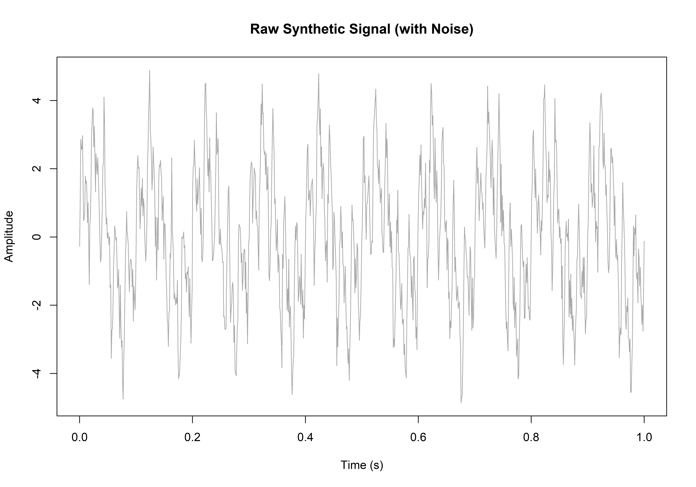
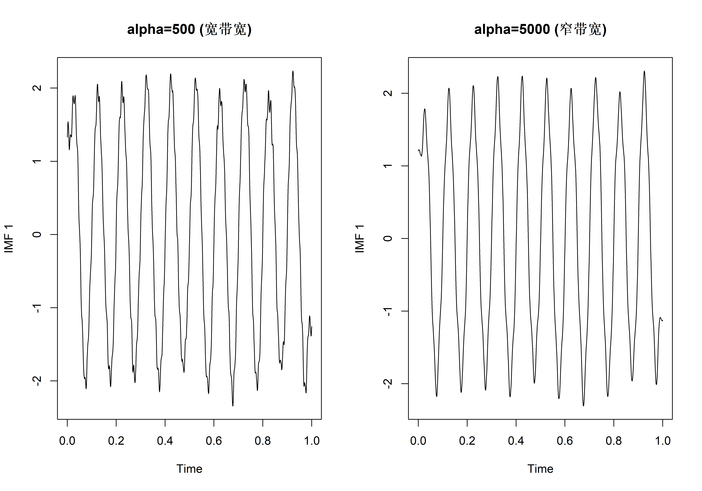
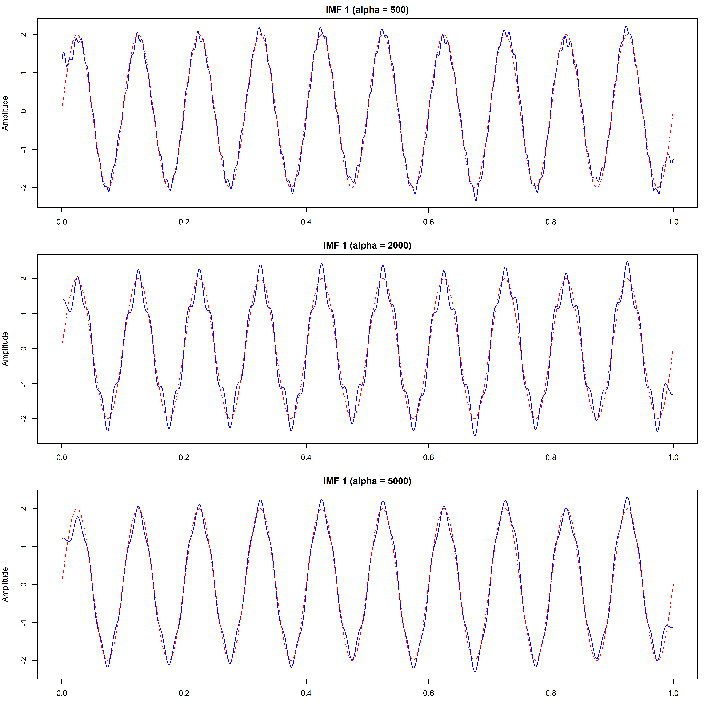
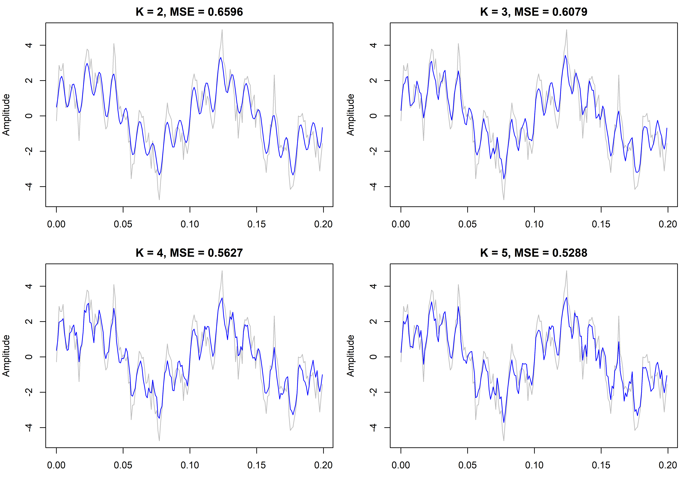
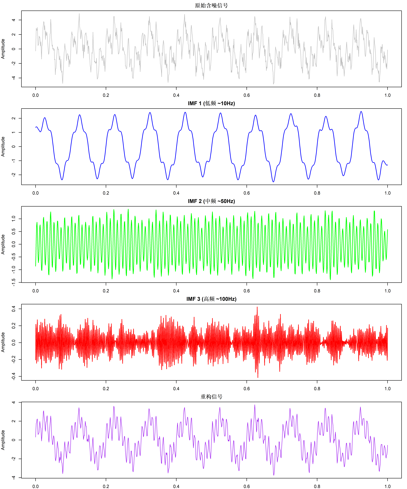
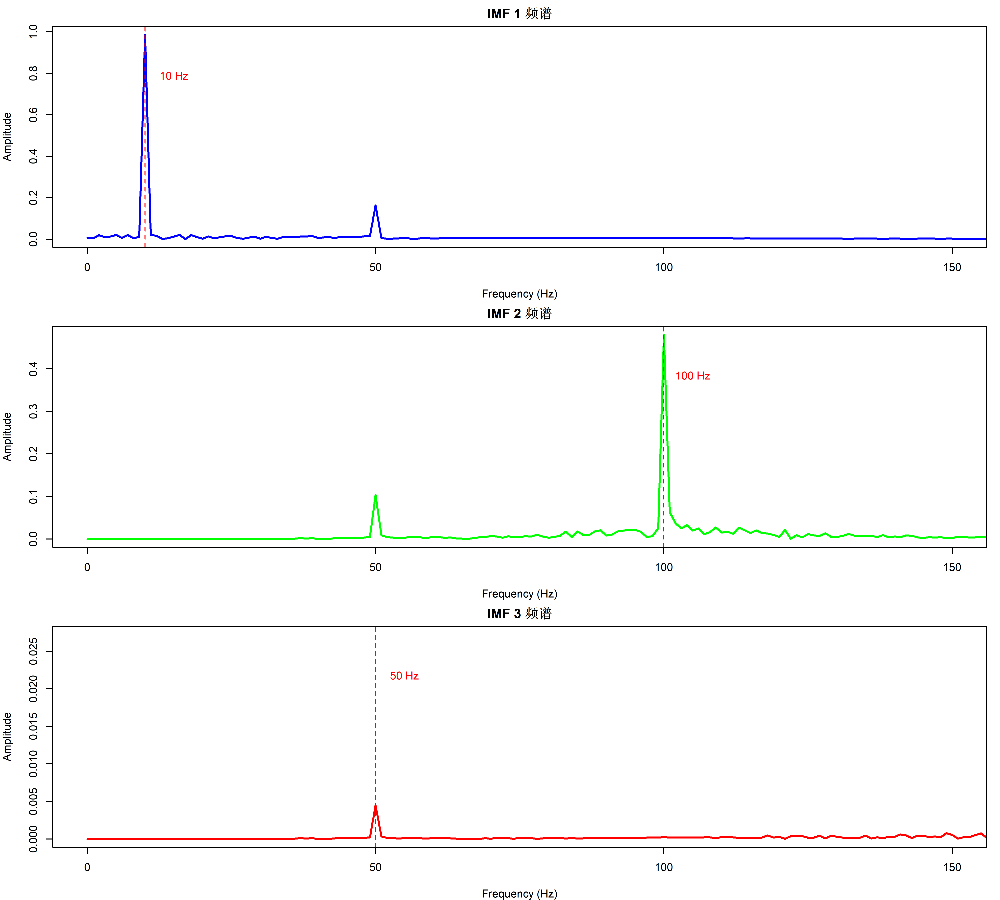
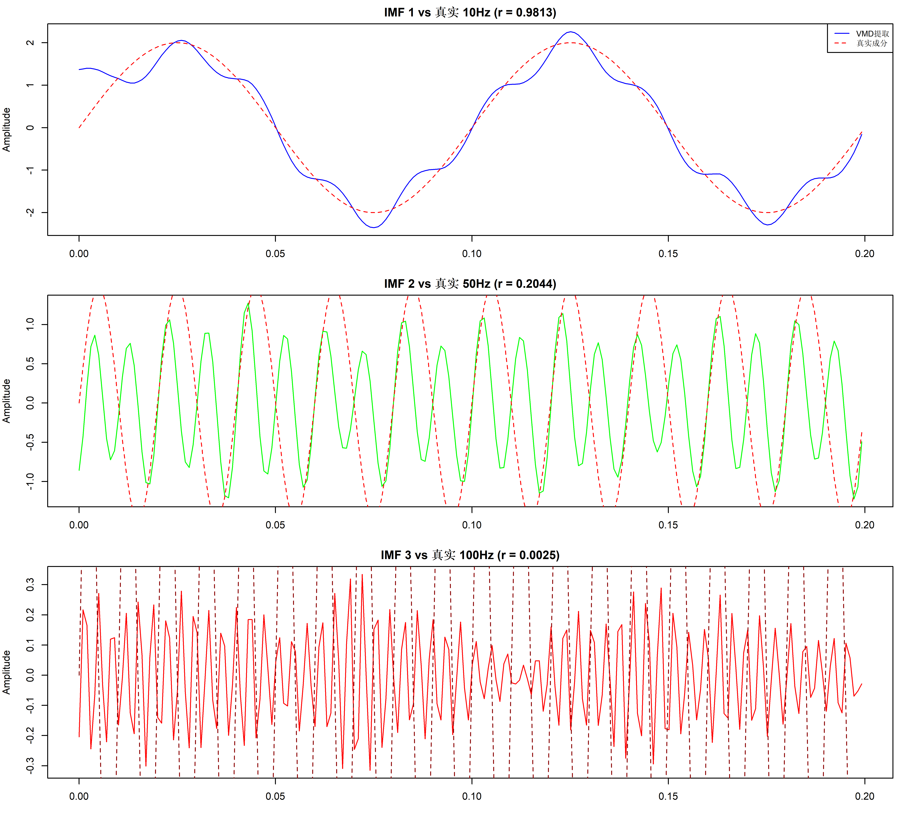
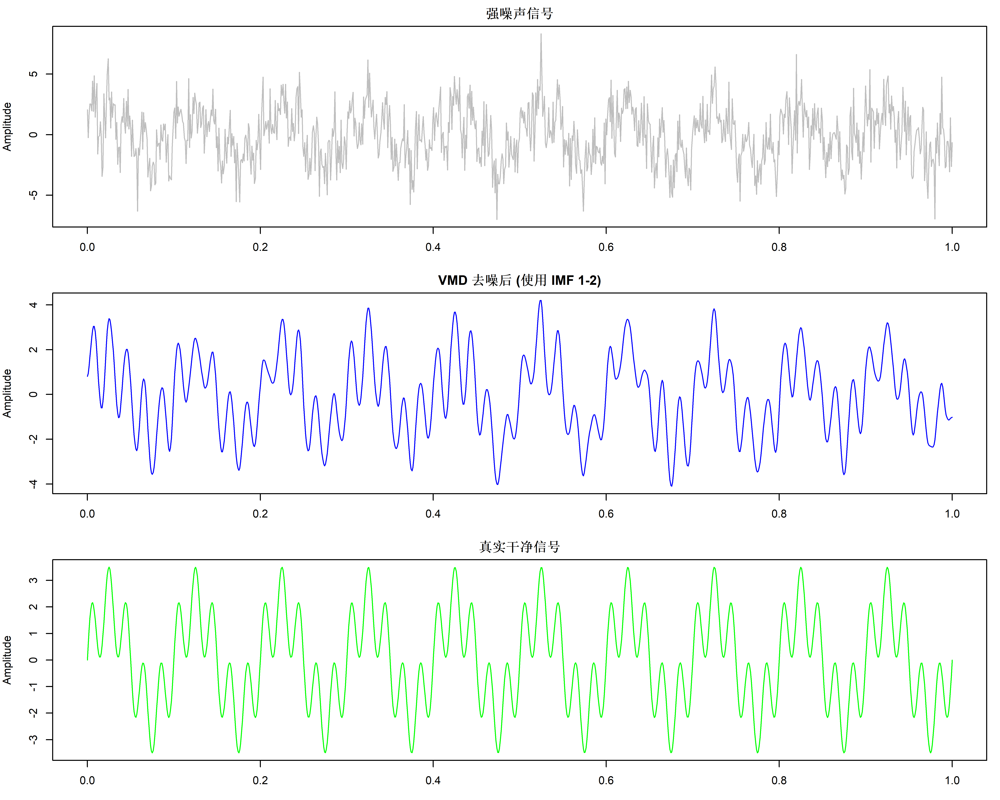

# VMDecomp 包不在 CRAN，需从 GitHub 安装
install.packages("devtools")
devtools::install_github("lampros-mouselimis/VMDecomp")变分模态分解 (VMD) 信号处理完全指南
R包
信号处理
时间序列
处理非线性非平稳信号的利器：完全非递归的 VMD 分解算法 R 语言实现，从数学原理到实战应用。
前言
在生物医学信号（EEG, ECG）、金融时间序列和机械振动分析中，我们经常遇到非平稳和非线性信号。传统的傅里叶分析假设信号是平稳的，无法有效处理这类复杂信号。变分模态分解 (Variational Mode Decomposition, VMD) 提供了一种强大的解决方案。
本教程将全面介绍 VMD 的理论基础、R 语言实现、参数调优策略以及实际应用案例。
VMD 的数学原理
什么是模态分解？
模态分解的目标是将一个复杂信号 \(f(t)\) 分解为若干个本征模态函数 (Intrinsic Mode Functions, IMF)：
\[f(t) = \sum_{k=1}^{K} u_k(t) + r(t)\]
其中 \(u_k(t)\) 是第 \(k\) 个模态分量，\(r(t)\) 是残差。
每个 IMF 应该是一个调幅-调频 (AM-FM) 信号： \[u_k(t) = A_k(t) \cos(\phi_k(t))\]
其中 \(A_k(t)\) 是瞬时幅度，\(\phi_k(t)\) 是瞬时相位。
VMD 的变分问题
VMD 将信号分解构造为一个约束变分优化问题：
目标：找到 K 个模态 \(\{u_k\}\)，使得每个模态的带宽最小化。
最小化：Σ ||∂_t[(δ(t) + j/πt) * u_k(t)] e^{-jω_k t}||²
约束条件：Σ u_k = f其中： - \(\omega_k\) 是第 \(k\) 个模态的中心频率 - \((δ(t) + j/πt) * u_k(t)\) 是 \(u_k\) 的解析信号（通过希尔伯特变换获得） - \(e^{-j\omega_k t}\) 将信号频谱移至基带
ADMM 求解算法
VMD 使用交替方向乘子法 (ADMM) 迭代求解：
| 步骤 | 更新变量 | 说明 |
|---|---|---|
| 1 | \(\hat{u}_k^{n+1}\) | 更新模态频谱 |
| 2 | \(\omega_k^{n+1}\) | 更新中心频率 |
| 3 | \(\hat{\lambda}^{n+1}\) | 更新拉格朗日乘子 |
迭代直到满足收敛条件： \[\sum_k \|\hat{u}_k^{n+1} - \hat{u}_k^n\|_2^2 / \|\hat{u}_k^n\|_2^2 < \epsilon\]
VMD vs EMD 详细对比
| 特性 | VMD | EMD |
|---|---|---|
| 理论基础 | 变分优化理论，数学严格 | 经验算法，无严格数学基础 |
| 分解方式 | 非递归，同时分解所有模态 | 递归筛选，逐一提取 |
| 模态混叠 | 通过带宽约束有效避免 | 容易发生，尤其相近频率 |
| 噪声敏感性 | 低，内置去噪机制 | 高，噪声直接影响筛选 |
| 端点效应 | 较小（频域处理） | 明显（时域处理） |
| 模态数 K | 需预先设定 | 自适应确定 |
| 计算速度 | 较慢（迭代优化） | 较快（筛选过程） |
| 参数敏感度 | 中等（alpha, K） | 低（自动） |
[!NOTE] VMD 的主要优势在于其”带宽限制”的变分框架，能够将频率相近的成分有效分离，这在 EMD 中几乎不可能实现。
R 语言工具：VMDecomp 包
安装
函数接口
library(VMDecomp)
library(ggplot2)
library(dplyr)
library(tidyr)vmd() 函数的完整参数：
vmd(
signal, # 输入信号（一维数值向量）
alpha, # 带宽约束因子（惩罚参数）
tau, # 噪声容限（0 = 无严格约束）
K, # 模态数量
DC, # 是否包含直流分量（TRUE/FALSE）
init, # 中心频率初始化方式（1=均匀, 2=随机）
tol # 收敛容差
)仿真信号分解实验
构造已知成分的测试信号
为了验证 VMD 的分解效果，我们构造一个包含三个已知频率成分的合成信号：
\[S(t) = 2\sin(2\pi \cdot 10 \cdot t) + 1.5\sin(2\pi \cdot 50 \cdot t) + \sin(2\pi \cdot 100 \cdot t) + \epsilon\]
# 采样参数
fs <- 1000 # 采样频率 (Hz)
duration <- 1 # 信号时长 (s)
t <- seq(0, duration, length.out = fs * duration)
# 真实信号成分
f1 <- 10 # 低频
f2 <- 50 # 中频
f3 <- 100 # 高频
# 原始成分（用于后续对比）
comp1_true <- 2 * sin(2 * pi * f1 * t)
comp2_true <- 1.5 * sin(2 * pi * f2 * t)
comp3_true <- 1 * sin(2 * pi * f3 * t)
# 合成信号 (加高斯白噪声)
set.seed(123)
noise <- rnorm(length(t), 0, 0.5)
sig <- comp1_true + comp2_true + comp3_true + noise
# 绘制原始信号
plot(t, sig,
type = "l", col = "darkgrey",
main = "合成测试信号 (10Hz + 50Hz + 100Hz + Noise)",
xlab = "Time (s)", ylab = "Amplitude"
)
FFT 频谱分析确定 K 值
在使用 VMD 之前，通常先用 FFT 分析信号的频率成分：
# 计算 FFT
sig_fft <- fft(sig)
P <- abs(sig_fft / length(sig))
P1 <- P[1:(length(sig) / 2 + 1)]
P1[2:length(P1)] <- 2 * P1[2:length(P1)]
f <- fs * (0:(length(sig) / 2)) / length(sig)
# 绘制单边频谱
plot(f, P1,
type = "l", xlim = c(0, 150),
main = "FFT 频谱分析 - 确定 K 值",
xlab = "Frequency (Hz)", ylab = "Amplitude"
)
abline(v = c(10, 50, 100), col = "red", lty = 2)
text(c(10, 50, 100), max(P1) * 0.9, c("10Hz", "50Hz", "100Hz"), pos = 4, col = "red")
从频谱图可以清晰看到 3 个峰值，因此设置 K = 3。
VMD 参数详解与调优
关键参数说明
| 参数 | 符号 | 作用 | 推荐值 |
|---|---|---|---|
| K | 模态数 | 分解出的 IMF 数量 | FFT 峰值数 + 0~1 |
| alpha | α | 带宽约束强度 | 1000-5000 |
| tau | τ | 噪声容限 | 0 或 0.01 |
| DC | - | 包含直流分量 | 通常 FALSE |
| init | - | 初始化方式 | 1 (均匀分布) |
| tol | ε | 收敛阈值 | 1e-6 或 1e-7 |
alpha 参数的影响实验
alpha 控制模态的带宽： - alpha 小 → 带宽宽 → 模态可能重叠/混合 - alpha 大 → 带宽窄 → 分离更清晰，但可能丢失边缘信息
# 对比不同 alpha 值
alphas <- c(500, 2000, 5000)
par(mfrow = c(length(alphas), 1), mar = c(3, 4, 2, 1))
for (a in alphas) {
vmd_res <- VMDecomp::vmd(sig, alpha = a, tau = 0, K = 3, DC = FALSE, init = 1, tol = 1e-6)
# 绘制第一个模态（应对应10Hz）
plot(t, vmd_res$u[, 1],
type = "l", col = "blue",
main = paste0("IMF 1 (alpha = ", a, ")"),
xlab = "", ylab = "Amplitude"
)
# 叠加真实10Hz成分用于对比
lines(t, comp1_true, col = "red", lty = 2)
}
K 值选择策略
[!TIP] K 值选择的 3 种方法：
- FFT 峰值法：观察频谱中明显的峰值数量
- 能量法：逐渐增加 K，当残差能量变化小于阈值时停止
- 中心频率法：检查相邻模态的中心频率差异，过小说明 K 过大
# K 值敏感性分析
par(mfrow = c(2, 2), mar = c(3, 4, 2, 1))
for (K_test in c(2, 3, 4, 5)) {
vmd_res <- VMDecomp::vmd(sig, alpha = 2000, tau = 0, K = K_test, DC = FALSE, init = 1, tol = 1e-6)
# 计算重构误差
reconstructed <- rowSums(vmd_res$u)
error <- mean((sig - reconstructed)^2)
# 绘制重构信号
plot(t[1:200], sig[1:200],
type = "l", col = "gray",
main = paste0("K = ", K_test, ", MSE = ", round(error, 4)),
xlab = "Time", ylab = "Amplitude"
)
lines(t[1:200], reconstructed[1:200], col = "blue")
}
完整分解与验证
执行标准 VMD 分解
# 最优参数设置
alpha <- 2000 # 适中的带宽限制
tau <- 0 # 无噪声容限
K <- 3 # 3 个主要成分
DC <- FALSE # 无直流偏移
init <- 1 # 均匀初始化
tol <- 1e-6 # 收敛容差
# 执行分解
vmd_res <- VMDecomp::vmd(sig, alpha, tau, K, DC, init, tol)
# 提取模态分量矩阵
imfs <- vmd_res$u
# 查看中心频率（如果返回）
if (!is.null(vmd_res$omega)) {
cat("模态中心频率 (归一化): ", round(vmd_res$omega[nrow(vmd_res$omega), ], 4), "\n")
cat("对应实际频率 (Hz): ", round(vmd_res$omega[nrow(vmd_res$omega), ] * fs / 2, 1), "\n")
}模态中心频率 (归一化): 0.0107 0.0982 0.2829
对应实际频率 (Hz): 5.3 49.1 141.4 分解结果可视化
par(mfrow = c(5, 1), mar = c(2, 4, 2, 1))
# 原始信号
plot(t, sig, type = "l", main = "原始含噪信号", col = "gray", ylab = "Amplitude")
# 分解出的各 IMF
colors <- c("blue", "green", "red")
titles <- c("IMF 1 (低频 ~10Hz)", "IMF 2 (中频 ~50Hz)", "IMF 3 (高频 ~100Hz)")
for (i in 1:3) {
plot(t, imfs[, i],
type = "l", col = colors[i], lwd = 1.5,
main = titles[i], ylab = "Amplitude"
)
}
# 重构信号
plot(t, rowSums(imfs), type = "l", main = "重构信号", col = "purple", ylab = "Amplitude")
频谱验证
par(mfrow = c(3, 1), mar = c(4, 4, 2, 1))
for (i in 1:3) {
imf_fft <- fft(imfs[, i])
P <- abs(imf_fft / length(imfs[, i]))
P1 <- P[1:(length(imfs[, i]) / 2 + 1)]
f <- fs * (0:(length(imfs[, i]) / 2)) / length(imfs[, i])
plot(f, P1,
type = "l", xlim = c(0, 150),
main = paste("IMF", i, "频谱"),
xlab = "Frequency (Hz)", ylab = "Amplitude",
col = colors[i], lwd = 2
)
# 标注峰值频率
peak_idx <- which.max(P1[f < 150 & f > 5])
peak_freq <- f[f < 150 & f > 5][peak_idx]
abline(v = peak_freq, col = "red", lty = 2)
text(peak_freq + 5, max(P1) * 0.8, paste0(round(peak_freq, 1), " Hz"), col = "red")
}
与真实成分对比
# 计算相关系数
cor1 <- cor(imfs[, 1], comp1_true)
cor2 <- cor(imfs[, 2], comp2_true)
cor3 <- cor(imfs[, 3], comp3_true)
par(mfrow = c(3, 1), mar = c(3, 4, 2, 1))
plot(t[1:200], imfs[1:200, 1],
type = "l", col = "blue",
main = paste0("IMF 1 vs 真实 10Hz (r = ", round(cor1, 4), ")"), ylab = "Amplitude"
)
lines(t[1:200], comp1_true[1:200], col = "red", lty = 2)
legend("topright", c("VMD提取", "真实成分"), col = c("blue", "red"), lty = c(1, 2), cex = 0.8)
plot(t[1:200], imfs[1:200, 2],
type = "l", col = "green",
main = paste0("IMF 2 vs 真实 50Hz (r = ", round(cor2, 4), ")"), ylab = "Amplitude"
)
lines(t[1:200], comp2_true[1:200], col = "red", lty = 2)
plot(t[1:200], imfs[1:200, 3],
type = "l", col = "red",
main = paste0("IMF 3 vs 真实 100Hz (r = ", round(cor3, 4), ")"), ylab = "Amplitude"
)
lines(t[1:200], comp3_true[1:200], col = "darkred", lty = 2)
高级应用：VMD 去噪
VMD 的一个重要应用是信号去噪：通过分解后选择性重构实现。
去噪原理
- 用 VMD 分解含噪信号
- 识别哪些 IMF 主要包含噪声（通常是高频模态）
- 仅用”干净”的 IMF 重构信号
# 生成强噪声信号
set.seed(42)
sig_noisy <- comp1_true + comp2_true + rnorm(length(t), 0, 1.5)
# VMD 分解 (使用更大的 K 来分离噪声)
vmd_denoise <- VMDecomp::vmd(sig_noisy, alpha = 3000, tau = 0, K = 4, DC = FALSE, init = 1, tol = 1e-6)
# 计算每个 IMF 的能量
imf_energy <- apply(vmd_denoise$u, 2, function(x) sum(x^2))
cat("各 IMF 能量占比:\n")各 IMF 能量占比:print(round(imf_energy / sum(imf_energy) * 100, 1))[1] 54.9 35.4 5.3 4.4par(mfrow = c(3, 1), mar = c(3, 4, 2, 1))
# 原始含噪信号
plot(t, sig_noisy,
type = "l", col = "gray",
main = "强噪声信号", ylab = "Amplitude"
)
# 使用前2个 IMF 重构（去除高频噪声模态）
sig_denoised <- rowSums(vmd_denoise$u[, 1:2])
plot(t, sig_denoised,
type = "l", col = "blue",
main = "VMD 去噪后 (使用 IMF 1-2)", ylab = "Amplitude"
)
# 真实信号对比
sig_true <- comp1_true + comp2_true
plot(t, sig_true,
type = "l", col = "green",
main = "真实干净信号", ylab = "Amplitude"
)
# 计算去噪效果
snr_before <- 10 * log10(sum(sig_true^2) / sum((sig_noisy - sig_true)^2))
snr_after <- 10 * log10(sum(sig_true^2) / sum((sig_denoised - sig_true)^2))
cat("去噪前 SNR:", round(snr_before, 2), "dB\n")去噪前 SNR: 1.4 dBcat("去噪后 SNR:", round(snr_after, 2), "dB\n")去噪后 SNR: 11.22 dB实际应用场景
生物医学信号处理
| 应用领域 | 信号类型 | VMD 作用 | 实际用途 |
|---|---|---|---|
| 心电图 (ECG) | 心电节律 | 分离 QRS 波群和基线漂移 | 心律失常检测 |
| 脑电图 (EEG) | 脑波节律 | 提取 α, β, θ, δ 波段 | 睡眠分期、癫痫检测 |
| 肌电图 (EMG) | 肌肉活动 | 去除运动伪迹和电源干扰 | 肌疲劳分析 |
| 呼吸信号 | 呼吸模式 | 分离呼吸成分和心跳干扰 | 睡眠呼吸暂停诊断 |
金融时间序列分析
# 金融数据分解示例（概念代码）
# 将股价分解为：长期趋势 + 周期波动 + 短期噪声
stock_price <- get_stock_data("AAPL")
vmd_stock <- vmd(stock_price, alpha = 2000, K = 3)
trend <- vmd_stock$u[, 1] # 长期趋势
cycle <- vmd_stock$u[, 2] # 中期周期
noise <- vmd_stock$u[, 3] # 短期波动/噪声机械故障诊断
- 轴承振动信号：提取故障特征频率
- 齿轮箱信号：分离啮合频率成分
- 旋转机械：识别不平衡、不对中等故障模式
常见问题与解决方案
问题诊断表
| 问题 | 可能原因 | 解决方案 |
|---|---|---|
| 模态混叠 | K 值过小 | 增加 K 值 |
| 过分解（模态太碎） | K 值过大 | 减少 K 值 |
| 相邻模态频率太近 | alpha 过小 | 增加 alpha |
| 边缘效应 | 信号截断不当 | 使用镜像延拓预处理 |
| 收敛慢/不收敛 | 参数不当 | 调整 alpha 或 tol |
| 高频模态丢失 | alpha 过大 | 减小 alpha |
参数选择流程图
开始
│
↓
[FFT 分析]──→ 确定 K 值
│
↓
[设置 alpha=2000]
│
↓
[运行 VMD]
│
↓
检查模态频谱
│
├──→ 混叠? ──→ 增加 K 或 alpha
│
├──→ 过分解? ──→ 减少 K
│
└──→ 满意 ──→ 完成[!WARNING] VMD 对参数较为敏感！建议先用仿真信号（已知成分）测试参数设置，确定最佳参数后再应用于真实数据。
与其他分解方法的对比
主流分解方法一览
| 方法 | 全称 | 特点 | 适用场景 |
|---|---|---|---|
| EMD | 经验模态分解 | 自适应、无需设定 K | 一般非平稳信号 |
| EEMD | 集合经验模态分解 | 添加噪声抑制模态混叠 | 噪声敏感信号 |
| CEEMDAN | 完全自适应噪声集合经验模态分解 | 进一步改进噪声处理 | 强噪声信号 |
| VMD | 变分模态分解 | 非递归、带宽可控 | 频率相近成分分离 |
| EWT | 经验小波变换 | 自适应小波 | 频率变化信号 |
何时选择 VMD？
✅ 推荐使用 VMD： - 需要分离频率相近的成分 - 信号含较强噪声 - 需要精确控制各模态带宽 - 端点效应敏感的应用
❌ 考虑其他方法： - 完全未知信号成分数量 → EMD/EEMD - 计算速度要求极高 → EMD - 频率随时间剧烈变化 → EWT
参考文献
Dragomiretskiy, K., & Zosso, D. (2014). Variational Mode Decomposition. IEEE Transactions on Signal Processing, 62(3), 531-544.
Nazari, M., & Sakhaei, S. M. (2020). Variational Mode Decomposition: Applications in biomedical signal processing. Computers in Biology and Medicine.
Wang, Y., Markert, R., Xiang, J., & Zheng, W. (2015). Research on variational mode decomposition and its application in detecting rub-impact fault of the rotor system. Mechanical Systems and Signal Processing.
Lahmiri, S. (2014). Comparative study of ECG signal denoising by wavelet thresholding in empirical and variational mode decomposition domains. Healthcare Technology Letters.